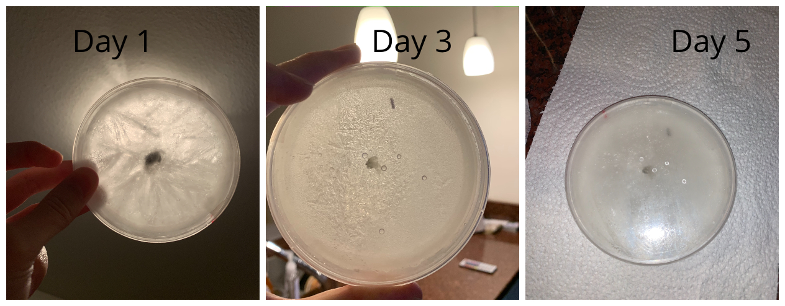

Hypothesis
My microbe will not grow in sub-zero temperatures.
Description of experiment
For this experiment, I placed one sample of my microbe in the freezer, where it was exposed to a temperature of -16° C, and kept in the dark. Then, I placed another sample of my microbe in a drawer of my room (so that it was not exposed to light), where the temperature was 21° C. I made sure both the samples were not exposed to light, to keep the experiment consistent -- since temperature is the environmental variable I will be changing. I then observed the growth of my microbe for 5 days and recorded the results.
Results
Treatment Group 1(Frozen at -16° C)
There was no increase in size.
Treatment Group 2(Room temperature, 21° C)
There was a clear increase in size, which means the fungi was growing.
Conclusion
- My hypothesis was correct, my microbe could not grow in extreme cold temperatures.
- It thrived in the my room's temperature, which was a cool and dark condition.
- Through this experiment, I have learned that my microbe, Mike Robe, enjoys cool environments and cannot grow in extreme cold.